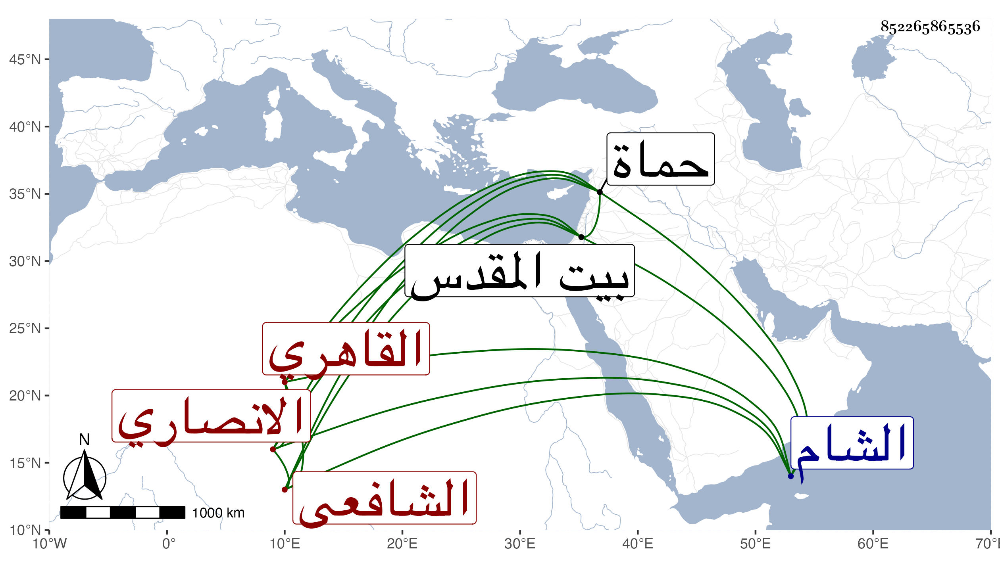

0902Sakhawi.DawLamic.ITO20230111-ara1.EIS1600.852265865536
Biography ID: 852265865536
178
محمد بن محمد بن أبي بكر بن محمد بن محمد البدر بن القاضي شمس الدين الانصاري القاهري الشافعي ويعرف بابن الانبابي . ولد سنة أربع وأربعين وثمانمائة تقريبا وحفظ العمدة والمنهاج وألفيتي الحديث والنحو وغيرها وعرض على ابن البلقيني والمناوي وسعد الدين بن الديري في آخرين واشتغل قليلا عند البامي والمناوي ثم الشمس الابناسي وقرأ والعمدة علي الديمي وناب عن أبيه ببعض الجهات ثم عن المناوي فمن بعده ، وأضيفت اليه عدة جهات واستقل بأوقاف الحنفية بعد أبيه ، بل استقر في صحابة ديوان جيش الشام في ربيع الثاني سنة خمس وثملنين ، وحج مرة مع والده ثم بمفرده وزار بيت المقدس ودخل حماة فما دونها وبلغنا أنه وقعت كائنة في سنة تسع وتسعين بسبب شيء أخرجه .
